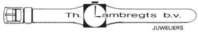
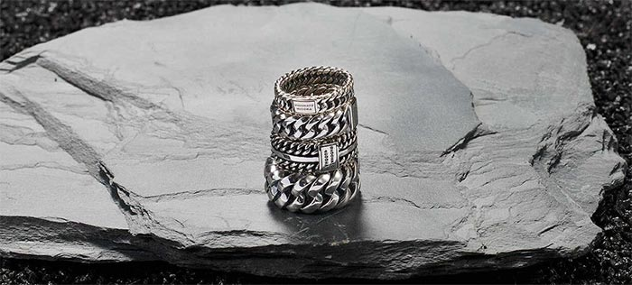

076 - 501 28 96In alle prijscategorieën. Niets is zo persoonlijk als het vinden van een nieuwe ring, armband, collier of oorbellen. Of de juiste ring voor uw geliefde. Iedereen kan slagen bij ons, jong en oud.

Nieuw in de collectie
Kom ons brede assortiment bekijken in de winkel. Wij zetten graag onze expertise in om u te helpen met het vinden van uw perfecte sieraad.
Van Zinzi tot Seiko en van Balmain tot Danish Design.
ZinziSeikoBalmainDanish DesignBuddha to Buddha
Ook voor horlogereparaties bent u bij ons welkom in onze winkel aan de Markt in Etten-Leur.
Sieraden of horloges bestellen kan ook telefonisch via 076 - 501 28 96 of per mail via info@juwelierlambregts.nl.